Same layout, copy, sample data and interactions (both run ../prototype/app.js). Only colour and emphasis differ. Before = initial state · Just completed = one tap, row settling in place with the undo toast · Settled = ~7 s later, row regrouped into “Done · 3”, toast expired. Rendered with Reduce Motion so no frame is mid-animation.
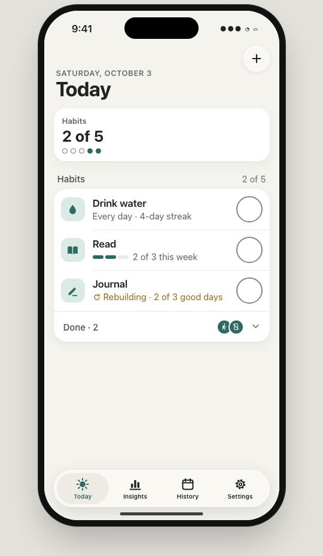
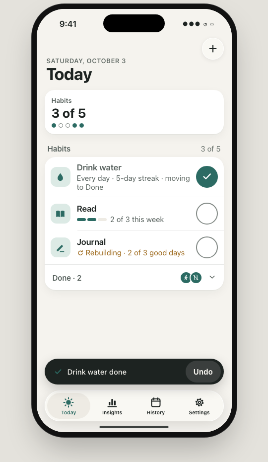
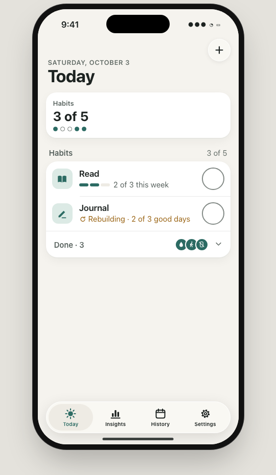
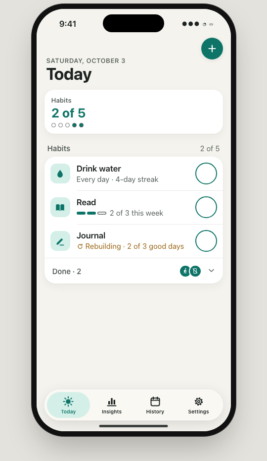
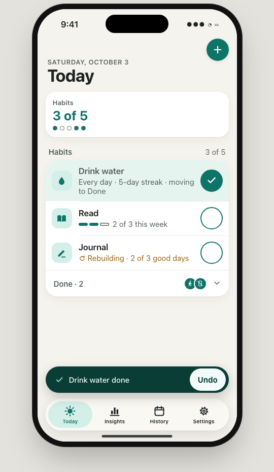
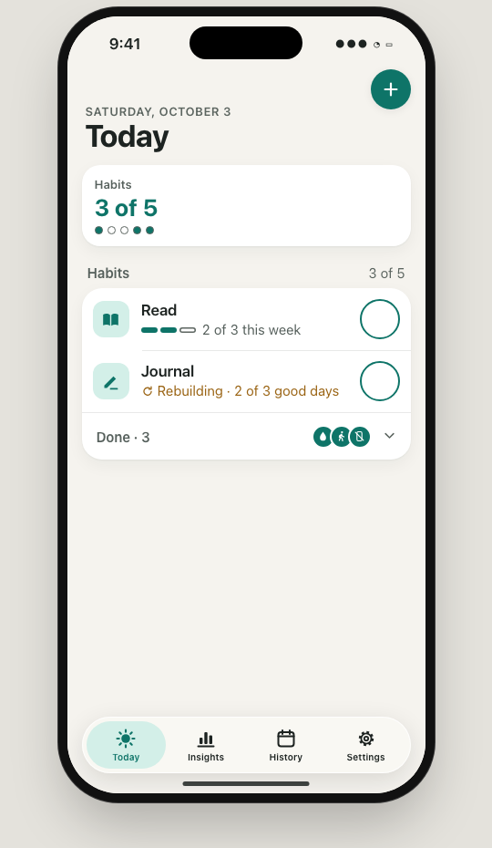
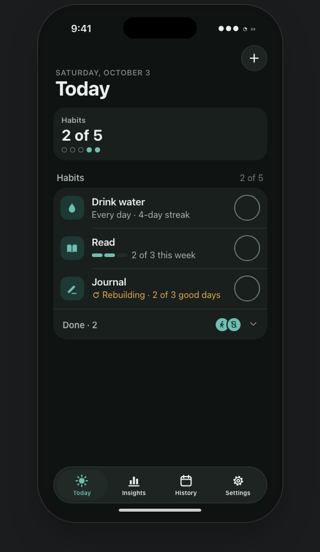
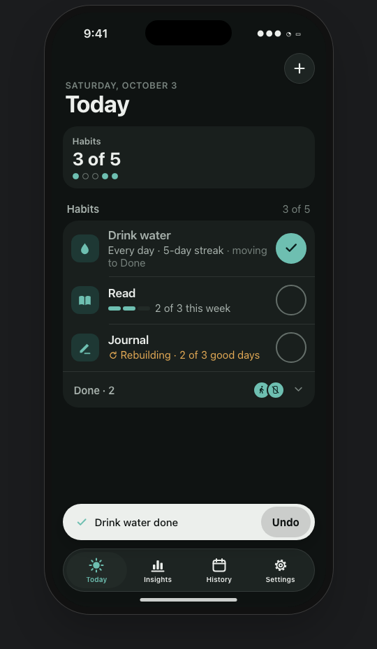
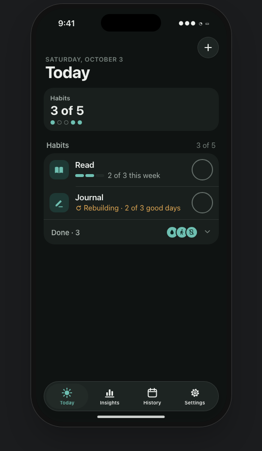
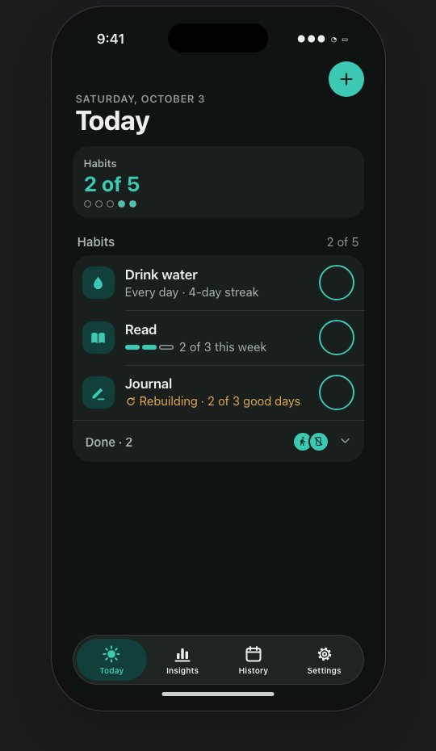
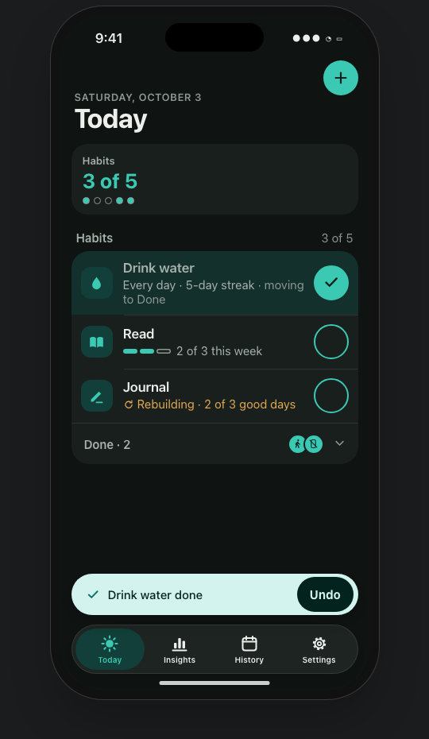
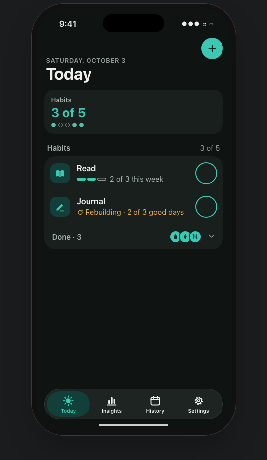